4 As Linguagens Regulares e a Analise Léxica
4.1 Linguagens Regulares
Nesta seção são apresentados conceitos fundamentais relacionados às linguagens formais, às expressões regulares e aos autômatos finitos, estabelecendo as bases teóricas necessárias para compreender o processo de análise léxica de um compilador. Esses conceitos permitem formalizar a estrutura dos elementos que compõem uma linguagem de programação e compreender como sequências de caracteres podem ser reconhecidas e classificadas de acordo com determinadas regras.
Inicialmente, são introduzidos os principais conceitos relacionados às linguagens regulares e às expressões regulares, destacando sua capacidade de representar padrões léxicos presentes nos programas-fonte. Em seguida, são estudados os autômatos finitos, modelos computacionais utilizados para reconhecer linguagens regulares e que constituem uma importante fundamentação para a implementação de analisadores léxicos. A relação entre expressões regulares e autômatos também é explorada, permitindo compreender como especificações abstratas dos elementos léxicos podem ser transformadas em mecanismos efetivos de reconhecimento.
O domínio desses fundamentos é particularmente importante para o projeto de compiladores, uma vez que a análise léxica constitui a primeira etapa do processo de compilação. Nessa etapa, o programa-fonte é examinado como uma sequência de caracteres, que é agrupada em unidades léxicas denominadas tokens. Identificadores, palavras reservadas, constantes, operadores e delimitadores, entre outros elementos, podem ser especificados por meio de padrões regulares e posteriormente reconhecidos por autômatos finitos.
O objetivo desta seção, portanto, não é apresentar um tratamento exaustivo da teoria das linguagens formais e dos autômatos, mas destacar os conceitos e resultados que serão necessários ao longo do desenvolvimento do projeto de um compilador. O aprofundamento desses temas pode ser encontrado em obras específicas dedicadas à teoria da computação, às linguagens formais e aos autômatos. (Lewis; Papadimitriou, 2004; L.Gersting, 2004; Sipser, 2012; Vieira, 2006).
4.2 Cadeias e Linguagens
Cadeias de caracteres são estruturas fundamentais da Ciência da Computação. Textos, identificadores, números representados como sequências de dígitos, programas e arquivos podem ser vistos como sequências finitas de símbolos. Para entender essas estruturas, é necessário estabelecer inicialmente um conjunto de símbolos que podem ser utilizados na construção das cadeias.
Alfabetos
Um alfabeto é um conjunto finito e não vazio de símbolos. Um alfabeto é normalmente representado pelas letras gregas \(\Sigma\) ou \(\Gamma\). Os elementos de um alfabeto são chamados de símbolos.
A definição do alfabeto depende da aplicação. Por exemplo, podemos considerar o alfabeto binário
\[ \Sigma_1=\{0,1\}, \]
o alfabeto formado pelas letras minúsculas do português
\[ \Sigma_2= \{a,b,c,d,e,f,g,h,i,j,k,l,m,n,o,p,q,r,s,t,u,v,w,x,y,z\}, \]
ou ainda um alfabeto contendo letras e dígitos:
\[ \Gamma=\{a,b,c,0,1\}. \]
É importante observar que um símbolo é considerado um elemento indivisível do alfabeto. Por exemplo, se
\[ \Sigma=\{0,1\}, \]
então \(0\) e \(1\) são símbolos. Já a sequência \(01\) não é um símbolo desse alfabeto; ela é uma cadeia formada por dois símbolos.
Um alfabeto não precisa ser constituído necessariamente por caracteres individuais. Em uma determinada aplicação, cada símbolo pode ser representado por uma palavra, um número ou qualquer outro objeto que seja considerado uma unidade indivisível. O que importa é que o alfabeto seja um conjunto bem definido de símbolos que possam ser utilizados na construção das cadeias.
Cadeias
Uma cadeia, também denominada palavra, sobre um alfabeto \(\Sigma\) é uma sequência finita de símbolos pertencentes a \(\Sigma\).
Por exemplo, considerando o alfabeto
\[ \Sigma=\{0,1\}, \]
a sequência
\[ 001001 \]
é uma cadeia sobre \(\Sigma\). Da mesma forma, considerando o alfabeto das letras minúsculas, a sequência
\[ computacao \]
é uma cadeia sobre esse alfabeto.
Se uma cadeia \(w\) possui \(n\) símbolos, podemos escrevê-la como
\[ w=w_1w_2w_3\cdots w_n, \]
em que
\[ w_i\in\Sigma \]
para \(1\leq i\leq n\).
A ordem dos símbolos é importante. Em geral,
\[ w_1w_2\neq w_2w_1. \]
Por exemplo,
\[ abc\neq bac. \]
Embora as duas cadeias contenham os mesmos símbolos, elas são cadeias diferentes porque a ordem dos símbolos é diferente.
Comprimento de uma cadeia
O comprimento de uma cadeia \(w\), representado por \(|w|\), corresponde ao número de símbolos que aparecem na cadeia.
Por exemplo, para
\[ w=01001, \]
temos
\[ |w|=5. \]
De maneira geral, se
\[ w=w_1w_2\cdots w_n, \]
então
\[ |w|=n. \]
O comprimento é uma propriedade fundamental das cadeias. Duas cadeias podem possuir o mesmo comprimento sem serem iguais. Por exemplo,
\[ |010|=|101|=3, \]
mas
\[ 010\neq101. \]
Também podemos comparar o comprimento de cadeias diferentes. Se \(x=abc\) e \(y=defgh\), então
\[ |x|=3 \qquad\text{e}\qquad |y|=5. \]
O comprimento será utilizado frequentemente para definir propriedades e operações sobre cadeias.
Cadeia vazia
Uma cadeia que não contém nenhum símbolo é denominada cadeia vazia. Ela é representada normalmente por
\[ \varepsilon. \]
Em algumas referências, também pode ser utilizada a notação \(\lambda\).
Por definição,
\[ |\varepsilon|=0. \]
A cadeia vazia é uma cadeia especial porque, embora não contenha símbolos, faz parte do conjunto de todas as cadeias que podem ser construídas sobre um alfabeto.
A cadeia vazia desempenha, para a operação de concatenação, um papel semelhante ao número zero na adição ou ao número um na multiplicação. Para qualquer cadeia \(w\),
\[ w\varepsilon=\varepsilon w=w. \]
Assim, a concatenação de uma cadeia com a cadeia vazia não altera a cadeia original.
Prefixos, sufixos e subcadeias
Uma cadeia pode conter outras cadeias em sua estrutura. Considere, por exemplo,
\[ w=luizeduardo. \]
A cadeia \(edu\) aparece dentro de \(w\). Dizemos que \(edu\) é uma subcadeia de \(w\).
É importante distinguir diferentes formas de ocorrência de uma cadeia dentro de outra.
Uma cadeia \(x\) é um prefixo de \(w\) quando existe uma cadeia \(y\) tal que
\[ w=xy. \]
Por exemplo, os prefixos de
\[ w=abc \]
são
\[ \varepsilon,\quad a,\quad ab,\quad abc. \]
Uma cadeia \(x\) é um sufixo de \(w\) quando existe uma cadeia \(y\) tal que
\[ w=yx. \]
Assim, os sufixos de \(abc\) são
\[ \varepsilon,\quad c,\quad bc,\quad abc. \]
Uma cadeia \(x\) é uma subcadeia de \(w\) quando ocorre de forma consecutiva dentro de \(w\). Por exemplo, \(bc\) é uma subcadeia de \(abcde\).
A distinção entre prefixo, sufixo e subcadeia será importante em diferentes algoritmos e propriedades envolvendo cadeias.
Reverso de uma cadeia
O reverso de uma cadeia \(w\) é obtido invertendo a ordem de seus símbolos. O reverso de \(w\) é representado por
\[ w^R. \]
Se
\[ w=w_1w_2\cdots w_n, \]
então
\[ w^R=w_nw_{n-1}\cdots w_2w_1. \]
Por exemplo, se
\[ w=abcde, \]
então
\[ w^R=edcba. \]
Outro exemplo é
\[ (00101)^R=10100. \]
Uma cadeia que é igual ao seu próprio reverso é denominada palíndromo. Portanto, uma cadeia \(w\) é um palíndromo quando
\[ w=w^R. \]
Por exemplo,
\[ aba \]
e
\[ radar \]
são palíndromos.
Concatenação
Uma das operações mais importantes sobre cadeias é a concatenação. A concatenação de duas cadeias consiste em colocar os símbolos da segunda cadeia imediatamente após os símbolos da primeira.
Se
\[ x=x_1x_2\cdots x_n \]
e
\[ y=y_1y_2\cdots y_m, \]
a concatenação de \(x\) e \(y\), representada por \(xy\), é dada por
\[ xy=x_1x_2\cdots x_ny_1y_2\cdots y_m. \]
Por exemplo, se
\[ x=abc \]
e
\[ y=def, \]
então
\[ xy=abcdef. \]
Observe que a concatenação não é, em geral, comutativa. Ou seja,
\[ xy\neq yx \]
na maioria dos casos. No exemplo anterior,
\[ xy=abcdef \]
enquanto
\[ yx=defabc. \]
Uma propriedade importante da concatenação é a associatividade:
\[ (xy)z=x(yz). \]
Isso significa que, ao concatenar três cadeias, a forma como agrupamos as operações não altera o resultado.
A cadeia vazia é o elemento neutro da concatenação:
\[ w\varepsilon=\varepsilon w=w. \]
Potência de uma cadeia
A concatenação de uma cadeia consigo mesma pode ser representada utilizando uma potência.
Para uma cadeia \(w\) e um inteiro \(k\geq 1\), definimos
\[ w^k= \underbrace{ww\cdots w}_{k\text{ vezes}}. \]
Por exemplo,
\[ (ab)^3=ababab. \]
Também definimos
\[ w^0=\varepsilon. \]
Assim,
\[ (ab)^0=\varepsilon, \]
\[ (ab)^1=ab, \]
\[ (ab)^2=abab \]
e
\[ (ab)^3=ababab. \]
A definição de \(w^0\) é necessária para manter as propriedades usuais da potenciação e está diretamente relacionada ao papel da cadeia vazia como elemento neutro da concatenação.
Conjunto de todas as cadeias
A partir de um alfabeto \(\Sigma\), podemos construir cadeias de comprimento \(0\), \(1\), \(2\), \(3\) e assim por diante. O conjunto formado por todas as cadeias finitas possíveis sobre \(\Sigma\) é denominado \(\Sigma^*\).
Formalmente,
\[ \Sigma^*= \bigcup_{n\geq0}\Sigma^n. \]
Como
\[ \Sigma^0=\{\varepsilon\}, \]
podemos escrever
\[ \Sigma^*= \{\varepsilon\} \cup \Sigma \cup \Sigma^2 \cup \Sigma^3 \cup\cdots. \]
Por exemplo, para o alfabeto binário
\[ \Sigma=\{0,1\}, \]
temos
\[ \Sigma^*= \{ \varepsilon, 0, 1, 00, 01, 10, 11, 000, 001, 010, 011, 100, 101, 110, 111, \ldots \}. \]
O conjunto \(\Sigma^*\) é infinito sempre que \(\Sigma\) possui pelo menos um símbolo, pois podemos construir cadeias de comprimento arbitrariamente grande.
Também é utilizado o conjunto
\[ \Sigma^+ \]
para representar o conjunto de todas as cadeias não vazias sobre \(\Sigma\). Portanto,
\[ \Sigma^+=\bigcup_{n\geq1}\Sigma^n. \]
Existe uma relação simples entre esses dois conjuntos:
\[ \Sigma^*=\Sigma^+\cup\{\varepsilon\}. \]
Consequentemente,
\[ \Sigma^+=\Sigma^*-\{\varepsilon\}. \]
Essa distinção será importante porque algumas definições permitem a cadeia vazia, enquanto outras consideram somente cadeias não vazias.
Quantidade de cadeias de determinado comprimento
Se um alfabeto \(\Sigma\) possui \(k\) símbolos, então o número de cadeias de comprimento \(n\) que podem ser construídas sobre esse alfabeto é
\[ |\Sigma^n|=k^n. \]
Por exemplo, para o alfabeto binário
\[ \Sigma=\{0,1\}, \]
existem
\[ 2^3=8 \]
cadeias de comprimento \(3\):
\[ 000,\quad001,\quad010,\quad011, \]
\[ 100,\quad101,\quad110,\quad111. \]
Para cadeias de comprimento \(4\), existem
\[ 2^4=16 \]
possibilidades.
Esse resultado é uma consequência direta do princípio multiplicativo. Para cada uma das \(n\) posições da cadeia existem \(k\) possibilidades de escolha.
Ordenação lexicográfica
As cadeias podem ser organizadas de acordo com uma ordem. Uma das formas mais utilizadas é a ordenação lexicográfica, também conhecida como ordem de dicionário.
Para estabelecer uma ordem lexicográfica, primeiro é necessário definir uma ordem entre os símbolos do alfabeto. Considere, por exemplo,
\[ 0<1. \]
As cadeias podem então ser organizadas considerando inicialmente o primeiro símbolo em que duas cadeias diferem.
No caso do alfabeto binário, uma enumeração das cadeias em ordem lexicográfica, agrupando-as pelo comprimento, é
\[ \varepsilon,\quad 0,\quad 1,\quad 00,\quad 01,\quad 10,\quad 11,\quad 000,\quad 001,\quad 010,\quad 011,\quad 100,\ldots \]
É importante observar que diferentes convenções podem ser utilizadas para organizar cadeias. A ordem lexicográfica propriamente dita e a ordem por comprimento seguida de ordem lexicográfica não são necessariamente a mesma coisa.
Na ordem lexicográfica, por exemplo, uma cadeia pode ser considerada menor que outra simplesmente porque o primeiro símbolo em que elas diferem é menor, independentemente do comprimento. Já a ordenação por comprimento e, dentro de cada comprimento, lexicograficamente, é frequentemente utilizada para enumerar \(\Sigma^*\) em Computação.
Linguagens
Uma linguagem sobre um alfabeto \(\Sigma\) é qualquer conjunto de cadeias pertencentes a \(\Sigma^*\). Formalmente,
\[ L\subseteq\Sigma^*. \]
Essa definição é bastante geral. Uma linguagem pode ser finita ou infinita e pode possuir qualquer conjunto de cadeias que satisfaça a condição de ser um subconjunto de \(\Sigma^*\).
Por exemplo, considerando
\[ \Sigma=\{0,1\}, \]
podemos definir a linguagem
\[ L=\{0,1,00,11\}. \]
Nesse caso, \(L\) é uma linguagem finita.
Também podemos definir a linguagem
\[ L=\{w\in\{0,1\}^*\mid w\text{ contém pelo menos um }1\}. \]
Essa linguagem é infinita, pois existem cadeias de comprimento arbitrariamente grande contendo pelo menos um símbolo \(1\).
Outro exemplo é
\[ L=\{0^n1^n\mid n\geq0\}. \]
Essa linguagem contém as cadeias
\[ \varepsilon,\quad 01,\quad 0011,\quad 000111,\quad 00001111,\ldots \]
e possui infinitas cadeias.
Uma linguagem também pode ser vazia. A linguagem vazia, representada por
\[ \varnothing, \]
é a linguagem que não contém nenhuma cadeia.
É importante distinguir a linguagem vazia da linguagem que contém apenas a cadeia vazia:
\[ \varnothing \neq \{\varepsilon\}. \]
A primeira possui zero cadeias, enquanto a segunda possui exatamente uma cadeia.
Operações sobre linguagens
Como linguagens são conjuntos de cadeias, podemos aplicar a elas operações de conjuntos. Além disso, podemos definir operações específicas utilizando as operações sobre cadeias.
Se \(L_1\) e \(L_2\) são linguagens sobre um mesmo alfabeto \(\Sigma\), a união das linguagens é definida por
\[ L_1\cup L_2= \{w\mid w\in L_1\text{ ou }w\in L_2\}. \]
A interseção é definida por
\[ L_1\cap L_2= \{w\mid w\in L_1\text{ e }w\in L_2\}. \]
A diferença entre duas linguagens é dada por
\[ L_1-L_2= \{w\mid w\in L_1\text{ e }w\notin L_2\}. \]
O complemento de uma linguagem \(L\) em relação a \(\Sigma^*\) é
\[ \overline{L} = \Sigma^*-L. \]
O complemento depende do alfabeto considerado. Por isso, ao escrever \(\overline{L}\), é necessário saber qual é o universo de cadeias em relação ao qual o complemento está sendo definido.
Concatenação de linguagens
A operação de concatenação também pode ser estendida de cadeias para linguagens.
Sejam \(L_1\) e \(L_2\) duas linguagens. A concatenação \(L_1L_2\) é definida por
\[ L_1L_2= \{xy\mid x\in L_1,\ y\in L_2\}. \]
Isso significa que construímos uma nova linguagem concatenando cada cadeia de \(L_1\) com cada cadeia de \(L_2\).
Por exemplo, sejam
\[ L_1=\{a,b\} \]
e
\[ L_2=\{0,1\}. \]
Então,
\[ L_1L_2= \{a0,a1,b0,b1\}. \]
A concatenação de linguagens é associativa:
\[ (L_1L_2)L_3=L_1(L_2L_3), \]
mas, em geral, não é comutativa:
\[ L_1L_2\neq L_2L_1. \]
A linguagem
\[ \{\varepsilon\} \]
funciona como elemento neutro para a concatenação de linguagens, pois
\[ L\{\varepsilon\} = \{\varepsilon\}L = L. \]
Por outro lado,
\[ L\varnothing = \varnothing L = \varnothing. \]
Potência de uma linguagem
Assim como ocorre com cadeias, podemos definir potências de linguagens.
Para uma linguagem \(L\), definimos
\[ L^0=\{\varepsilon\} \]
e, para \(n\geq1\),
\[ L^n= \underbrace{LL\cdots L}_{n\text{ vezes}}. \]
Por exemplo, se
\[ L=\{a,b\}, \]
então
\[ L^2= \{aa,ab,ba,bb\} \]
e
\[ L^3= \{aaa,aab,aba,abb,baa,bab,bba,bbb\}. \]
A partir dessas definições, podemos caracterizar \(\Sigma^*\) como
\[ \Sigma^* = \{\varepsilon\} \cup \Sigma \cup \Sigma^2 \cup \Sigma^3 \cup\cdots. \]
Isso mostra que \(\Sigma^*\) pode ser interpretado como o conjunto de todas as concatenações finitas de símbolos do alfabeto.
Fechamento de Kleene
A operação
\[ L^*= \bigcup_{n\geq0}L^n \]
é denominada fechamento de Kleene, ou estrela de Kleene, de uma linguagem \(L\).
De maneira semelhante, define-se o fechamento positivo por
\[ L^+= \bigcup_{n\geq1}L^n. \]
Portanto,
\[ L^*=L^+\cup\{\varepsilon\}. \]
Quando \(L=\Sigma\), temos
\[ \Sigma^*= \{\varepsilon\} \cup \Sigma \cup \Sigma^2 \cup \Sigma^3 \cup\cdots, \]
que corresponde exatamente ao conjunto de todas as cadeias finitas construídas a partir dos símbolos de \(\Sigma\).
O fechamento de Kleene é uma operação fundamental para descrever conjuntos potencialmente infinitos de cadeias de maneira compacta.
Representação de linguagens
Uma linguagem pode ser especificada de diferentes maneiras. Para linguagens finitas, podemos simplesmente listar suas cadeias. Por exemplo,
\[ L=\{a,ab,aba,bba\}. \]
Para linguagens infinitas, geralmente utilizamos uma propriedade, uma expressão ou uma regra que determine quais cadeias pertencem à linguagem.
Por exemplo,
\[ L=\{w\in\{0,1\}^*\mid |w|\text{ é par}\} \]
representa o conjunto de todas as cadeias binárias de comprimento par.
Outra forma de especificar a mesma ideia é observar que as cadeias podem ser agrupadas em blocos de dois símbolos:
\[ L=\{00,01,10,11\}^*. \]
As diferentes formas de representação tornam-se especialmente importantes quando estudamos expressões regulares, autômatos e gramáticas, pois esses formalismos fornecem diferentes maneiras de descrever conjuntos de cadeias.
Linguagens como conjuntos
A definição
\[ L\subseteq\Sigma^* \]
é particularmente importante porque estabelece que uma linguagem é, essencialmente, um conjunto de cadeias. Consequentemente, todas as propriedades fundamentais dos conjuntos podem ser utilizadas no estudo das linguagens.
Para uma cadeia \(w\), podemos perguntar se
\[ w\in L \]
ou se
\[ w\notin L. \]
Também podemos comparar linguagens utilizando igualdade. Duas linguagens \(L_1\) e \(L_2\) são iguais quando possuem exatamente as mesmas cadeias:
\[ L_1=L_2 \iff \forall w,\quad w\in L_1\Longleftrightarrow w\in L_2. \]
Essa definição é importante porque diferentes descrições podem representar exatamente a mesma linguagem. Uma determinada linguagem pode, por exemplo, ser descrita por uma lista de cadeias, uma propriedade, uma expressão regular, um autômato ou uma gramática. Embora as representações sejam diferentes, elas podem definir o mesmo conjunto de cadeias.
Síntese
Os conceitos apresentados nesta seção formam a base para o estudo matemático de sequências de símbolos. Um alfabeto é um conjunto finito e não vazio de símbolos. Uma cadeia é uma sequência finita de símbolos de um alfabeto e seu comprimento é representado por \(|w|\). A cadeia que não contém símbolos é denominada cadeia vazia e representada por \(\varepsilon\).
Sobre as cadeias podemos definir diversas operações e propriedades, como concatenação, reversão, potência, prefixos, sufixos e subcadeias. A partir de um alfabeto \(\Sigma\), o conjunto \(\Sigma^*\) representa todas as cadeias finitas que podem ser construídas com seus símbolos, incluindo a cadeia vazia, enquanto \(\Sigma^+\) representa apenas as cadeias não vazias.
Uma linguagem é um subconjunto de \(\Sigma^*\):
\[ \boxed{L\subseteq\Sigma^*}. \]
As linguagens podem ser finitas ou infinitas e podem ser descritas por propriedades, listas, expressões ou diferentes formalismos. Sobre elas podem ser definidas operações como união, interseção, complemento, concatenação e fechamento de Kleene.
A relação entre alfabetos, cadeias e linguagens pode ser resumida pela seguinte sequência:
\[ \boxed{ \Sigma \longrightarrow \Sigma^* \longrightarrow L\subseteq\Sigma^* } \]
em que \(\Sigma\) fornece os símbolos básicos, \(\Sigma^*\) contém todas as cadeias que podem ser construídas a partir desses símbolos e \(L\) seleciona um subconjunto dessas cadeias. Essa estrutura será utilizada como fundamento para as definições e construções apresentadas nas próximas partes do livro.
4.3 Autômatos Finitos
Os autômatos finitos são modelos matemáticos utilizados para representar e estudar sistemas cujo comportamento pode ser descrito por um número finito de situações ou estados. Esses modelos constituem uma das estruturas fundamentais da Teoria de Linguagens Formais e possuem diversas aplicações na Computação, particularmente na construção de analisadores léxicos de compiladores.
Um autômato finito pode ser entendido como uma máquina abstrata que lê uma palavra, símbolo por símbolo, e, de acordo com o símbolo lido e com o seu estado atual, muda para outro estado. Ao final da leitura da palavra, o autômato determina se ela deve ser aceita ou rejeitada.
A máquina é denominada finita porque possui uma quantidade finita de estados. Cada estado pode representar uma determinada situação da computação. As mudanças entre os estados são realizadas por meio de transições, que são determinadas pelos símbolos da palavra que está sendo processada.
Uma representação gráfica de um autômato finito é apresentada na Figura fig-afd1. Nessa representação, os estados são representados por círculos e as transições por setas orientadas entre os estados. O rótulo associado a uma seta indica o símbolo que deve ser lido para que aquela transição seja realizada.
O estado inicial é indicado por uma seta que não possui estado de origem. Os estados de aceitação, também denominados estados finais, são representados por dois círculos concêntricos.
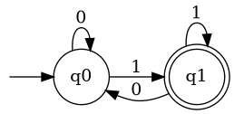
O autômato da Figura fig-afd1 possui dois estados, \(q_0\) e \(q_1\), sendo \(q_0\) o estado inicial e \(q_1\) um estado final. As setas indicam como o autômato deve mudar de estado à medida que os símbolos da palavra são lidos.
Por exemplo, quando o autômato está no estado \(q_0\) e lê o símbolo \(0\), permanece em \(q_0\). Quando está em \(q_0\) e lê o símbolo \(1\), realiza uma transição para \(q_1\). A partir de \(q_1\), as transições dependem dos símbolos definidos no autômato.
Essa representação permite visualizar o comportamento da máquina, mas, para descrever formalmente uma computação, é necessário definir o que significa o autômato estar em determinado estado enquanto ainda existem símbolos a serem processados.
Configuração instantânea
Para representar uma computação, podemos utilizar o conceito de configuração instantânea. Uma configuração instantânea descreve a situação do autômato em um determinado instante da computação e é representada pelo par
\[ [e,w], \]
em que:
- \(e\) representa o estado atual do autômato;
- \(w\) representa a parte da palavra que ainda não foi processada.
Por exemplo,
\[ [q_0,001] \]
indica que o autômato está no estado \(q_0\) e que ainda precisa processar a palavra \(001\).
À medida que os símbolos são lidos, a configuração é modificada. Para representar essa transformação, utiliza-se a relação
\[ \vdash, \]
denominada relação de transição ou relação de computação.
Suponha que exista no autômato uma transição de \(q_0\) para \(q_1\) associada ao símbolo \(a\). Nesse caso, podemos representar a computação por
\[ [q_0,aw]\vdash[q_1,w]. \]
A expressão indica que o autômato estava no estado \(q_0\), tinha como próximo símbolo a ser lido o símbolo \(a\) e, após processá-lo, passou para o estado \(q_1\). A parte \(w\) permanece como a porção da palavra que ainda não foi processada.
Portanto, cada passo da computação consome exatamente um símbolo da palavra e produz uma nova configuração.
Computação de uma palavra
Considere novamente o autômato apresentado na Figura fig-afd1 e a palavra
\[ w=001. \]
A computação pode ser representada por uma sequência de configurações instantâneas:
\[ [q_0,001] \vdash [q_0,01] \vdash [q_0,1] \vdash [q_1,\varepsilon]. \]
No primeiro passo, o autômato está em \(q_0\) e lê o primeiro símbolo, que é \(0\). De acordo com a transição correspondente, permanece em \(q_0\). A palavra restante passa a ser \(01\).
No segundo passo, o autômato lê novamente o símbolo \(0\) e permanece em \(q_0\). A palavra restante passa a ser \(1\).
Finalmente, o autômato lê o símbolo \(1\) e realiza a transição para o estado \(q_1\). Nesse momento, todos os símbolos da palavra foram processados.
Os símbolos \(\lambda\) ou \(\varepsilon\) são utilizados para representar a palavra vazia. Neste livro, será utilizada preferencialmente a notação \(\varepsilon\), embora \(\lambda\) também seja encontrada na literatura.
Assim,
\[ \lambda=\varepsilon \]
e
\[ |\varepsilon|=0. \]
Quando a computação termina, a configuração
\[ [q_1,\varepsilon] \]
indica que o autômato está no estado \(q_1\) e não existem mais símbolos para serem processados.
Aceitação de uma palavra
Uma palavra é aceita por um autômato finito quando a computação começa no estado inicial, todos os símbolos da palavra são processados e o autômato termina em um estado final.
No exemplo anterior, como \(q_0\) é o estado inicial e \(q_1\) é um estado final, a palavra \(001\) é aceita pelo autômato.
Por outro lado, se após o processamento do último símbolo o autômato terminar em um estado que não seja final, a palavra será rejeitada.
É importante observar que o fato de o autômato passar por um estado final durante a computação não é suficiente para aceitar uma palavra. O autômato deve terminar a leitura de toda a palavra em um estado final.
Computação completa
Para representar vários passos de uma computação, utilizamos a relação \(\vdash^*\), denominada fecho reflexivo e transitivo da relação \(\vdash\).
Assim,
\[ [e,w]\vdash^*[e',w'] \]
significa que é possível transformar a configuração \([e,w]\) na configuração \([e',w']\) após zero ou mais passos de computação.
O uso do asterisco é importante porque permite representar também uma computação que não realiza nenhum passo. Dessa forma,
\[ [e,w]\vdash^*[e,w]. \]
No caso de uma palavra ser processada completamente, temos uma computação da forma
\[ [i,w]\vdash^*[f,\epsilon], \]
em que \(i\) é o estado inicial e \(f\) é um estado final.
Linguagem reconhecida por um autômato
Um autômato finito não reconhece apenas uma palavra. Ao ser utilizado sobre todas as palavras possíveis do alfabeto \(\Sigma\), ele determina um conjunto de palavras que são aceitas. Esse conjunto é denominado linguagem reconhecida ou linguagem aceita pelo autômato.
Seja \(A\) um autômato finito definido sobre o alfabeto \(\Sigma\). A linguagem reconhecida por \(A\) é denotada por \(L(A)\) e pode ser definida formalmente por
\[ L(A)= \{w\in\Sigma^* \mid [i,w]\vdash^*[f,\epsilon], \text{ para algum } f\in F \}. \]
Nessa definição:
- \(L(A)\) é a linguagem reconhecida pelo autômato \(A\);
- \(w\) é uma palavra pertencente ao alfabeto \(\Sigma^*\);
- \(i\) é o estado inicial do autômato;
- \(F\) é o conjunto de estados finais;
- \(f\) é um estado final, isto é, \(f\in F\);
- \(\epsilon\) representa a palavra vazia;
- \(\vdash^*\) representa zero ou mais passos da computação.
A expressão
\[ [i,w]\vdash^*[f,\epsilon] \]
significa, portanto, que o autômato começa no estado inicial \(i\), processa completamente a palavra \(w\) e termina em algum estado final \(f\).
Autômatos Finitos Determinísticos
Os Autômatos Finitos Determinísticos (AFDs) constituem um dos modelos mais simples de máquinas abstratas utilizadas para reconhecer linguagens formais. Um AFD processa uma palavra símbolo por símbolo, mantendo, a cada instante, um único estado corrente. Para cada combinação de estado e símbolo de entrada existe exatamente uma transição possível.
A palavra determinístico está relacionada justamente a essa característica. Dado o estado atual do autômato e o próximo símbolo da palavra, o próximo estado é determinado de maneira única. Portanto, não existe escolha entre diferentes caminhos possíveis durante a computação.
Essa propriedade torna os AFDs particularmente adequados para implementação em programas de computador. O processamento de uma palavra pode ser realizado simplesmente consultando uma tabela que associa cada par formado por um estado e um símbolo de entrada ao próximo estado.
Definição formal
O Autômato Finito Determinístico (AFD) é matematicamente definido como uma quíntupla.
Definição 4.1 Um Autômato Finito Determinístico (AFD) é uma quíntupla
\[ A=(Q,\Sigma,\delta,i,F), \]
onde:
- \(Q\) é um conjunto finito de estados do autômato;
- \(\Sigma\) é o alfabeto de entrada;
- \(\delta:Q\times\Sigma\rightarrow Q\) é a função de transição;
- \(i\in Q\) é o estado inicial;
- \(F\subseteq Q\) é o conjunto de estados finais.
Cada componente da quíntupla possui uma função específica na definição do comportamento do autômato.
O conjunto \(E\) contém todos os estados possíveis da máquina. Como se trata de um autômato finito, esse conjunto deve possuir uma quantidade finita de elementos. Por exemplo,
\[ Q=\{q_0,q_1,q_2\}. \]
O conjunto \(\Sigma\) corresponde ao alfabeto utilizado como entrada. Se o autômato reconhece palavras constituídas pelos símbolos \(0\) e \(1\), podemos ter
\[ \Sigma=\{0,1\}. \]
A função \(\delta\) determina como o autômato muda de estado. Como
\[ \delta:Q\times\Sigma\rightarrow Q, \]
para cada estado \(q\in E\) e cada símbolo \(a\in\Sigma\), existe exatamente um estado \(p\in E\) tal que
\[ \delta(q,a)=p. \]
Essa é justamente a característica que diferencia o AFD de modelos não determinísticos: cada par (estado, símbolo) possui uma única transição definida.
O estado \(i\) representa o estado em que a computação começa. Finalmente, o conjunto \(F\) contém os estados que representam uma computação de aceitação. Uma palavra será aceita quando, depois de todos os seus símbolos serem processados, o autômato estiver em algum estado pertencente a \(F\).
Exemplo de um AFD
Usando a definição anterior, podemos descrever formalmente a máquina apresentada na Figura fig-afd1 como
\[ A_1= (\{q_0,q_1\}, \{0,1\}, \delta, q_0, \{q_1\}). \]
Nesse caso,
\[ Q=\{q_0,q_1\}, \]
é o conjunto de estados;
\[ \Sigma=\{0,1\}, \]
é o alfabeto de entrada;
\[ i=q_0 \]
é o estado inicial; e
\[ F=\{q_1\} \]
é o conjunto de estados finais.
A função de transição \(\delta\) pode ser representada por uma tabela. Nas linhas são apresentados os estados e nas colunas os símbolos do alfabeto.
| \(\delta\) | \(0\) | \(1\) |
|---|---|---|
| \(q_0\) | \(q_0\) | \(q_1\) |
| \(q_1\) | \(q_0\) | \(q_1\) |
A tabela deve ser interpretada da seguinte maneira. Para determinar o próximo estado, basta localizar a linha correspondente ao estado atual e a coluna correspondente ao símbolo que está sendo lido.
Por exemplo,
\[ \delta(q_0,0)=q_0 \]
indica que, estando no estado \(q_0\) e lendo o símbolo \(0\), o autômato permanece em \(q_0\).
Da mesma forma,
\[ \delta(q_0,1)=q_1 \]
indica que, estando em \(q_0\) e lendo o símbolo \(1\), o autômato passa para \(q_1\).
Podemos ainda observar que
\[ \delta(q_1,0)=q_0 \]
e
\[ \delta(q_1,1)=q_1. \]
A tabela contém uma entrada para cada combinação entre estado e símbolo do alfabeto. Essa propriedade é uma consequência direta da definição de um AFD: a função
\[ \delta:Q\times\Sigma\rightarrow Q \]
é uma função total. Portanto, não pode existir um par \((q,a)\) para o qual \(\delta(q,a)\) não esteja definido.
Função de transição estendida
A função \(\delta\) permite determinar apenas o próximo estado do autômato após a leitura de um único símbolo. Entretanto, durante a computação de uma palavra, precisamos determinar o estado alcançado após a leitura de toda a palavra.
Para isso, definimos a função de transição estendida, normalmente representada por \(\hat{\delta}\).
Definição 4.2 Seja um AFD \(A = (Q,\Sigma,\delta,i,F)\). A função de transição estendida para \(A\), \(\hat{\delta} : Q \times \Sigma^* \rightarrow Q\), definida recursivamente como:
\(\hat{\delta}(q,\varepsilon) = q\)
\(\hat{\delta}(q,ay) = \hat{\delta}(\delta(q,a),y)\), para todo \(q \in Q\), \(a \in \Sigma\) e \(y \in \Sigma^*\)
A primeira regra estabelece o caso base da definição. Se a palavra a ser processada é vazia, o autômato permanece no estado em que se encontra:
\[ \hat{\delta}(q,\varepsilon)=q. \]
A segunda regra determina como processar uma palavra não vazia. Se a palavra é formada por um primeiro símbolo \(a\) seguido da palavra \(y\), primeiro aplicamos \(\delta\) para processar \(a\) e obter o novo estado. Em seguida, aplicamos recursivamente \(\hat{\delta}\) para processar os símbolos restantes.
Em outras palavras, enquanto \(\delta\) processa um símbolo, \(\hat{\delta}\) permite processar uma palavra inteira.
Essa distinção pode ser resumida por:
\[ \delta:Q\times\Sigma\rightarrow Q \]
e
\[ \hat{\delta}:Q\times\Sigma^*\rightarrow Q. \]
Observe que o domínio da primeira função utiliza \(\Sigma\), enquanto o domínio da segunda utiliza \(\Sigma^*\).
Exemplo de computação utilizando \(\hat{\delta}\)
Considere novamente o autômato \(A_1\) e a palavra
\[ w=001. \]
A aplicação da função de transição estendida pode ser desenvolvida passo a passo:
\[ \begin{aligned} \hat{\delta}(q_0,001) &=\hat{\delta}(\delta(q_0,0),01)\\ &=\hat{\delta}(q_0,01)\\ &=\hat{\delta}(\delta(q_0,0),1)\\ &=\hat{\delta}(q_0,1)\\ &=\hat{\delta}(\delta(q_0,1),\epsilon)\\ &=\hat{\delta}(q_1,\epsilon)\\ &=q_1. \end{aligned} \]
Portanto,
\[ \boxed{\hat{\delta}(q_0,001)=q_1}. \]
Como \(q_1\in F\), concluímos que a palavra \(001\) é aceita pelo autômato \(A_1\).
Esse resultado também pode ser expresso utilizando a relação entre configurações instantâneas:
\[ [q_0,001] \vdash [q_0,01] \vdash [q_0,1] \vdash [q_1,\epsilon]. \]
As duas formas de representação descrevem a mesma computação. A primeira utiliza a função de transição estendida e a segunda explicita cada configuração intermediária do autômato.
Critério de aceitação
A função de transição estendida permite definir a linguagem reconhecida por um AFD de maneira particularmente simples.
Seja
\[ A=(Q,\Sigma,\delta,i,F). \]
A palavra \(w\in\Sigma^*\) é aceita por \(A\) se, e somente se,
\[ \hat{\delta}(i,w)\in F. \]
Consequentemente, a linguagem reconhecida por \(A\) é dada por
\[ L(A)= \{w\in\Sigma^* \mid \hat{\delta}(i,w)\in F \}. \]
Essa definição é equivalente à definição baseada nas configurações instantâneas apresentada anteriormente. A diferença está apenas na forma de representar a computação.
Para o autômato \(A_1\), por exemplo,
\[ \hat{\delta}(q_0,001)=q_1 \]
e
\[ q_1\in F. \]
Logo,
\[ 001\in L(A_1). \]
Por outro lado, para a palavra \(000\) temos
\[ \hat{\delta}(q_0,000)=q_0. \]
Como
\[ q_0\notin F, \]
temos
\[ 000\notin L(A_1). \]
Implementação da computação
A definição matemática de um AFD possui uma correspondência direta com sua implementação computacional. Para simular o autômato, basta manter uma variável contendo o estado atual e, para cada símbolo da palavra de entrada, consultar a função de transição.
A tabela apresentada na Tabela tbl-transicao pode ser implementada diretamente como uma matriz. As linhas representam os estados e as colunas representam os símbolos do alfabeto.
Uma versão simplificada do algoritmo pode ser descrita pelo seguinte código exemplo:
#include <stdio.h>
// definição do automato
// M = (Q, Sigma, T, q_0, F)
char *estados = "01";
char *alfabeto = "01";
int T[2][2] = {0, 1,
0, 1};
char inicial = 0;
char *finais = "1";
int pertence(int s, char *c)
{
int i;
for (i = 0; c[i]; i++)
if (s == c[i] - '0')
return 1;
return 0;
}
int main()
{
char entrada[20];
do
{
printf("Cadeia de entrada (usando o alfabeto: %s): ", alfabeto);
scanf("%s", entrada);
printf("|%s|\n", entrada);
if (entrada[0] != '.')
{
int i = 0;
int estado = inicial;
while (entrada[i])
{
estado = T[estado][entrada[i] - 'a'];
i++;
}
if (pertence(estado, finais))
puts("aceita!");
else
puts("rejeita");
}
} while (entrada[0] != '.');
return 0;
}Para a palavra \(w=001\), o algoritmo executa três iterações:
| Passo | Estado atual | Símbolo | Próximo estado |
|---|---|---|---|
| 1 | \(q_0\) | \(0\) | \(q_0\) |
| 2 | \(q_0\) | \(0\) | \(q_0\) |
| 3 | \(q_0\) | \(1\) | \(q_1\) |
Ao final do processamento, o estado atual é \(q_1\). Como \(q_1\) pertence ao conjunto de estados finais,
\[ q_1\in F, \]
a palavra é aceita.
Essa implementação evidencia uma das principais vantagens dos AFDs: o reconhecimento de uma palavra pode ser realizado de maneira extremamente simples, processando cada símbolo uma única vez.
Se a palavra possui comprimento \(n\), o algoritmo realiza exatamente \(n\) consultas à função de transição. Assim, considerando que a consulta à tabela de transição seja realizada em tempo constante, o reconhecimento de uma palavra possui complexidade temporal
\[ O(n), \]
em que \(n=|w|\).
Essa característica explica, em parte, a importância dos autômatos finitos na implementação de analisadores léxicos. Uma vez construído o AFD correspondente a um determinado padrão léxico, a sequência de caracteres pode ser processada de forma eficiente, realizando uma transição para cada símbolo lido.
Nos exemplos computacionais apresentados neste livro, a função \(\delta\) será frequentemente representada por uma tabela ou por uma estrutura de dados equivalente. Dessa forma, a definição matemática do AFD pode ser diretamente transformada em um algoritmo de simulação.
Autômatos Finitos Não-Determinísticos
Um outro formalismo utilizado na representação de linguagens regulares é o Autômato Finito Não-Determinístico (AFN). Embora o AFN não aumente o poder de especificação dos Autômatos Finitos Determinísticos (AFDs), ele pode tornar mais simples e natural a definição de algumas máquinas.
O não determinismo manifesta-se pela possibilidade de, a partir de um mesmo estado e para um mesmo símbolo da entrada, existirem mais de uma transição possível. Além disso, um AFN pode realizar transições \(\varepsilon\), que permitem a mudança de estado sem consumir nenhum símbolo da cadeia de entrada.
Algumas definições de AFN também permitem a existência de mais de um estado inicial. Essa possibilidade, entretanto, não será considerada na definição de AFN adotada neste livro, pois ela não é necessária para caracterizar o não determinismo nem altera o poder de reconhecimento do modelo.
Definição 4.3 Um AFN é uma quíntupla \((Q,\Sigma,\) \(\delta,i,F)\), onde:
\(Q\) é o conjunto finito dos estados do autômato;
\(\Sigma\) é um alfabeto;
\(\delta:Q\times\Sigma_\varepsilon \rightarrow P(Q)\) é a função de transição;
\(i \in Q\) é o estado inicial;
\(F \subseteq Q\) é o conjunto de estados finais.
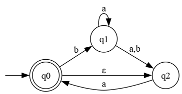
Computação em um AFN
A computação de um Autômato Finito Não Determinístico (AFN) consiste em acompanhar os possíveis estados em que o autômato pode se encontrar à medida que os símbolos da cadeia de entrada são processados. Diferentemente de um AFD, para um determinado estado e símbolo pode existir mais de um estado possível para o próximo passo. Além disso, o AFN pode realizar transições espontâneas, representadas por \(\varepsilon\), sem consumir nenhum símbolo da cadeia de entrada.
Considere o AFN apresentado anteriormente, cuja tabela de transição é:
| Estado | \(a\) | \(b\) | \(\varepsilon\) |
|---|---|---|---|
| \(q_0\) | \(\varnothing\) | \(\{q_1\}\) | \(\{q_2\}\) |
| \(q_1\) | \(\{q_1,q_2\}\) | \(\{q_2\}\) | \(\varnothing\) |
| \(q_2\) | \(\{q_0\}\) | \(\varnothing\) | \(\varnothing\) |
O estado \(q_0\) é o estado inicial e também é um estado final.
Observe, por exemplo, que
\[ \delta(q_1,a)=\{q_1,q_2\}. \]
Isso significa que, estando em \(q_1\) e lendo o símbolo \(a\), o autômato pode permanecer em \(q_1\) ou pode ir para \(q_2\). Essa possibilidade de escolha caracteriza o comportamento não determinístico do AFN.
Além disso,
\[ \delta(q_0,\varepsilon)=\{q_2\}, \]
o que significa que o autômato pode passar de \(q_0\) para \(q_2\) sem consumir nenhum símbolo da entrada.
Exemplo de computação
Considere a cadeia
\[ w=bba. \]
Vamos acompanhar uma possível computação do AFN.
Inicialmente, o autômato encontra-se em \(q_0\). Como existe uma transição \(\varepsilon\) de \(q_0\) para \(q_2\), antes mesmo de consumir qualquer símbolo o autômato também pode estar em \(q_2\). Portanto, a \(\varepsilon\)-fecho do estado inicial é
\[ \varepsilon\text{-fecho}(q_0)=\{q_0,q_2\}. \]
Agora, o primeiro símbolo da cadeia é \(b\). A partir dos estados \(\{q_0,q_2\}\), temos:
\[ \delta(q_0,b)=\{q_1\} \]
e
\[ \delta(q_2,b)=\varnothing. \]
Logo, após consumir o primeiro símbolo \(b\), o conjunto de estados possíveis é
\[ \{q_1\}. \]
O segundo símbolo também é \(b\). Como
\[ \delta(q_1,b)=\{q_2\}, \]
temos:
\[ \{q_1\} \xrightarrow{b} \{q_2\}. \]
Finalmente, resta consumir o símbolo \(a\). Como
\[ \delta(q_2,a)=\{q_0\}, \]
obtemos:
\[ \{q_2\} \xrightarrow{a} \{q_0\}. \]
Como \(q_0\) é um estado final, a cadeia \(bba\) é aceita pelo AFN.
Podemos representar essa computação por:
\[ q_0 \xrightarrow{b} q_1 \xrightarrow{b} q_2 \xrightarrow{a} q_0. \]
Como a computação termina em um estado final, concluímos que
\[ bba \in L(M), \]
onde \(L(M)\) representa a linguagem reconhecida pelo autômato \(M\).
As múltiplas computações possíveis no AFN também podem ser representada numa árvore:
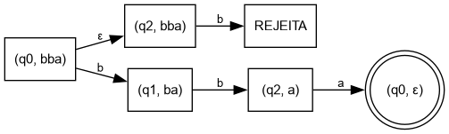
Não determinismo e múltiplas computações
Uma característica importante do AFN é que uma mesma cadeia pode produzir diferentes caminhos de computação. Considere, por exemplo, o estado \(q_1\) e o símbolo \(a\):
\[ \delta(q_1,a)=\{q_1,q_2\}. \]
Assim, ao ler \(a\) em \(q_1\), existem duas possibilidades:
\[ q_1\xrightarrow{a}q_1 \qquad\text{ou}\qquad q_1\xrightarrow{a}q_2. \]
Portanto, uma cadeia é aceita por um AFN quando existe pelo menos uma computação que consome toda a cadeia e termina em um estado final.
Não é necessário que todas as possíveis computações terminem em estados finais. Basta que uma delas seja bem-sucedida.
A função de transição e as transições inexistentes
Na representação gráfica de um AFN, normalmente desenhamos apenas as transições que realmente existem. Por exemplo, não há no autômato uma transição de \(q_0\) com o símbolo \(a\). Por isso, na tabela aparece:
\[ \delta(q_0,a)=\varnothing. \]
De maneira semelhante,
\[ \delta(q_2,b)=\varnothing. \]
Isso significa que não existe uma transição possível para aquele par estado/símbolo.
Nesse sentido, quando consideramos apenas as transições explicitamente representadas no diagrama, podemos dizer que a função de transição é parcial: alguns pares \((q,x)\) não possuem uma transição associada.
Entretanto, existe uma importante observação formal. A função de transição de um AFN pode ser definida como
\[ \delta:Q\times(\Sigma\cup\{\varepsilon\}) \longrightarrow\mathcal{P}(Q), \]
onde \(\mathcal{P}(Q)\) é o conjunto das partes de \(Q\).
Nessa definição, \(\delta\) é uma função total, pois todo par \((q,x)\) possui um resultado. Quando não existe uma transição, o resultado é simplesmente o conjunto vazio:
\[ \delta(q,x)=\varnothing. \]
Por exemplo,
\[ \delta(q_0,a)=\varnothing \]
não significa que a função deixou de estar definida. Significa que, a partir de \(q_0\), não existe nenhum estado possível ao consumir \(a\).
Assim, é possível adotar duas formas de interpretação:
- representação gráfica: apenas as transições existentes são representadas, podendo-se dizer que a relação de transição é parcial;
- definição formal: a função \(\delta\) é total e retorna \(\varnothing\) para os pares para os quais não existe uma transição.
Essa segunda definição é particularmente conveniente porque permite tratar uniformemente todos os pares estado/símbolo e será utilizada na construção de algoritmos para AFNs e na conversão de AFNs em AFDs.
Expressões Regulares
Um outro formalismo que pode ser utilizado para definição de linguagens são as Expressões Regulares (ER). Assim como as expressões aritméticas tem operadores (soma, multiplicação, divisão, …) que são utilizados para expressar valores numéricos, as expressões regulares usam os operadores de concatenação, união (representado pelo símbolo +) e fecho de Kleene (representado pelo símbolo *) para definir linguagens regulares.
Definição 4.4 Sejam \(A\) e \(B\) linguagens. As operações regulares de União, Concatenação e Fecho de Kleene são definidas da seguinte forma:
União: \(A \cup B = \{x | x \in A\) ou \(x \in B\}\).
Concatenação: \(AB = \{xy | x \in A\) e \(y \in B\}\).
Fecho de Kleene: \(A^*= \{x_1x_2...x_k | k \geq 0\) e \(x_i \in A\}\).
Definição 4.5 Uma ER sobre uma alfabeto \(\Sigma\) é definida recursivamente como:
\(\emptyset\), \(\lambda\) e \(a\) para qualquer \(a \in \Sigma\) são expressões regulares; tais que ER’s denotam, respectivamente, os conjuntos \(\emptyset\), \(\{\lambda\}\) e \(\{a\}\)
Se \(r\) e \(s\) são expressões regulares, então também são expressões regulares \((r+s)\), \((rs)\) e \(r^*\); tais ER’s denotam, respectivamente, \(L(r) \cup L(s)\), \(L(r)L(s)\) e \(L(r)^*\).
Alguns exemplos de ER considerando o alfabeto \(\Sigma = \{a, b\}\):
a*ba* = {\(w \in \Sigma^* | w\) contém um único b}
(a + \(\lambda\))b = {\(w \in \Sigma^* | w\) começa com a ou nada seguido de b}
a*b = {\(w \in \Sigma^* | w\) contém zero ou mais a´s finalizado por b}
a(a+b)*a+a = {\(w \in \Sigma^* | w\) começa e termina com a}
Conversão de ER para AFN
A classe de Linguagens Regulares é fechada com relação as operações de União, Concatenação e fecho de Kleene (Sipser, 2012; Vieira, 2006). A demonstração pode ser feita a partir construção de AFNs para essas operações, conforme ilustrado na Figura fig-uniao, Figura fig-concatenacao e Figura fig-kleene.
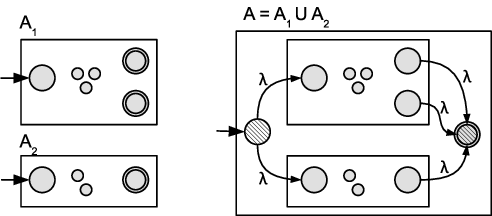
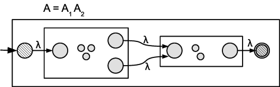
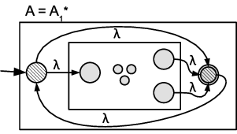
Usamos essa propriedade para transformar as Expressões Regulares em Autômatos Finitos Não-Determinísticos.
Conversão de AFN para AFD
Para todo Autômato Finito Não-Determinístico existe um Autômato Finito Determinístico correspondente (Lewis; Papadimitriou, 2004; Sipser, 2012; Vieira, 2006). A demonstração pode ser realizada através da simulação da execução em paralelo da computação do AFN.
Basicamente, ao invés de mudar para um único estado a cada transição, no AFN poderemos nos deslocar para um conjunto de estados possíveis, dada o não-determinismo de algumas transições.
Como visto anteriormente, um conjunto com \(k\) elementos possui \(2^k\) subconjuntos. Assim, para um conjunto de estados
\[ Q=\{1,2,3\}, \]
o conjunto das partes de \(Q\), denotado por \(\mathcal{P}(Q)\), é
\[ \mathcal{P}(Q)= \{\emptyset,\{1\},\{2\},\{3\},\{1,2\},\{1,3\},\{2,3\},\{1,2,3\}\}. \]
Na construção de um AFD equivalente a um AFN, cada estado do AFD representa um conjunto de estados do AFN. Portanto, se o AFN possui \(k\) estados, o AFD resultante poderá possuir, no máximo, \(2^k\) estados, correspondentes aos elementos de \(\mathcal{P}(Q)\).
Embora esse número possa parecer elevado, na prática nem todos os subconjuntos de \(Q\) precisam ser alcançados durante a construção do AFD. Além disso, durante a simulação de uma cadeia de entrada, apenas os conjuntos de estados efetivamente alcançáveis são considerados.
\(\varepsilon\)-fecho
As transições \(\varepsilon\) permitem que um AFN mude de estado sem consumir um símbolo da cadeia de entrada. Para determinar todos os estados que podem ser alcançados dessa maneira, utiliza-se o conceito de \(\varepsilon\)-fecho.
Seja
\[ M=(Q,\Sigma,\delta,q_0,F) \]
um AFN, em que a função de transição é dada por
\[ \delta:Q\times(\Sigma\cup\{\varepsilon\})\rightarrow\mathcal{P}(Q). \]
Para um estado \(q\in Q\), define-se o \(\varepsilon\)-fecho de \(q\) como o conjunto de estados que podem ser alcançados a partir de \(q\) utilizando zero ou mais transições \(\varepsilon\):
\[ \varepsilon\text{-fecho}(q) = \{p\in Q\mid q\overset{\varepsilon^*}{\longrightarrow}p\}. \]
O uso de zero ou mais transições é importante: o próprio estado \(q\) pertence ao seu \(\varepsilon\)-fecho, pois é possível permanecer em \(q\) sem realizar nenhuma transição.
De forma mais geral, para um conjunto de estados \(R\subseteq Q\), define-se:
\[ \varepsilon\text{-fecho}(R) = \bigcup_{q\in R}\varepsilon\text{-fecho}(q). \]
Equivalentemente,
\[ \varepsilon\text{-fecho}(R) = \{p\in Q\mid \exists q\in R\text{ tal que } q\overset{\varepsilon^*}{\longrightarrow}p \}. \]
Portanto, o \(\varepsilon\)-fecho de um conjunto \(R\) contém todos os estados que podem ser alcançados a partir de qualquer estado de \(R\), utilizando apenas transições \(\varepsilon\), incluindo os próprios estados de \(R\).
Esse conceito é fundamental na construção do AFD equivalente a um AFN, pois, ao processar um símbolo da entrada, é necessário considerar não apenas os estados alcançados diretamente pelo símbolo, mas também todos os estados que podem ser alcançados posteriormente por meio de transições \(\varepsilon\).
Através de \(P(Q)\) e \(\varepsilon\text{-fecho}(R)\) podemos construir o AFD \(M = \{Q', \Sigma, \delta', i', F'\}\) equivalente ao AFN \(N = \{Q, \Sigma, \delta, i, F\}\) da seguinte forma:
\(Q' \subseteq P(Q)\).
Para \(R \in Q'\), \(\delta'(R,a) = \bigcup_{r \in R}\varepsilon\text{-fecho}(\delta(r,a))\)
\(i = \varepsilon\text{-fecho}(\{i\})\).
\(F' = \{R \in Q' | R\) contém um estado de aceitação do \(AFN \}\)
Para exemplificar todo o processo de conversão de uma expressão regular para um autômato finito não-determinístico e desse para um autômato finito determinístico, faremos uma tradução para \(ER = 0^*1+0\):
A tradução da \(ER = 0\) para o AFN está representada Figura fig-zero;
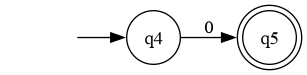
Figura 4.7: AFN correspondente a \(ER = 0\) A tradução da \(ER = 1\) para o AFN está representada na Figura fig-um;
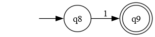
Figura 4.8: AFN correspondente a \(ER = 1\) A tradução da \(ER = 0^*\) para o AFN está representada na Figura fig-zeroestrela;
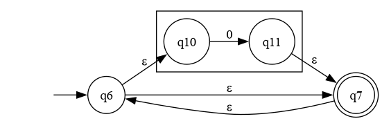
Figura 4.9: AFN correspondente a \(ER = 0^*\) A tradução da \(ER = 0^*1\) para o AFN está representada na Figura fig-zeroestrelaum;
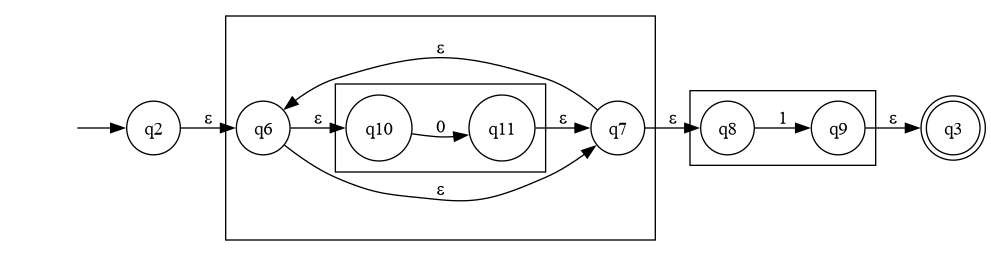
Figura 4.10: AFN correspondente a \(ER = 0^*1\) A tradução da \(ER = 0^*1+0\) para o AFN está representada na Figura fig-zeroestrelaumouzero;
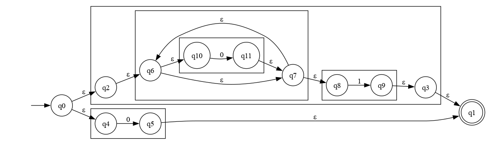
Figura 4.11: AFN correspondente a \(ER = 0^*1+0\) A tradução do AFN = \((\{q_0,q_1,q_2,q_3,q_4,q_5,q_6,q_7,q_8,q_9,q_{10},q_{11}\}, \{0,1\}, \delta,q_0,\{q_1\})\) da Figura fig-zeroestrelaumouzero para o AFD = \((\{q_0', q_1', q_2', q_3'\}, \{0,1\}, \delta', q_0', \{q_1', q_2'\})\) correspondente da Figura fig-afd é realizada conforme os passos seguintes. Primeiro o estado inicial para AFD correspondente é calculado como: \[q_0' = \varepsilon\text{-fecho}(q_0) = \{q_0, q_2, q_4, q_6, q_{10}, q_7, q_8\}\] A função de transição \(\delta'\) é calculada até a idempotência, da seguinte forma:
$
\[\begin{array}{ll} \delta'(q_0', 0) = & \bigcup_{q \in q_0'}\varepsilon\text{-fecho}(\delta(q,0)) = \\ & \varepsilon\text{-fecho}(\delta(q_4,0)) \cup \varepsilon\text{-fecho}(\delta(q_{10},0)) = \\ & \{q_5, q_1\} \cup \{q_{11},q_7,q_6,q_{10},q_8\} = \\ & \{q_5,q_7,q_{10},q_1,q_8,q_6,q_{11}\} = q_1'\\ \delta'(q_0', 1) = & \bigcup_{q \in q_0'}\varepsilon\text{-fecho}(\delta(q,1)) = \\ & \varepsilon\text{-fecho}(\delta(q_8,1)) = \\ & \{q_9,q_3,q_1\} = q_2' \\ \delta'(q_1', 0) = & \bigcup_{q \in q_1'}\varepsilon\text{-fecho}(\delta(q,0)) = \\ & \varepsilon\text{-fecho}(\delta(q_{10},0)) = \\ & \{q_{11},q_7,q_8,q_6,q_{10}\} = q_3' \\ \delta'(q_1', 1) = & \bigcup_{q \in q_1'}\varepsilon\text{-fecho}(\delta(q,1)) = \\ & \varepsilon\text{-fecho}(\delta(q_8,1)) = \\ & \{q_9,q_3,q_1\} = q_2' \\ \delta'(q_3', 0) = & \bigcup_{q \in q_3'}\varepsilon\text{-fecho}(\delta(q,0)) = \\ & \varepsilon\text{-fecho}(\delta(q_{10},0)) = \\ & \{q_{11},q_7,q_8,q_6,q_{10}\} = q_3' \\ \delta'(q_3', 1) = & \bigcup_{q \in q_3'}\varepsilon\text{-fecho}(\delta(q,1)) = \\ & \varepsilon\text{-fecho}(\delta(q_8,1)) = \\ & \{q_9,q_3,q_1\} = q_2' \\ \end{array}\]$
E o conjunto de estados finais \(F = \{q_1', q_2'\}\), pois são os estados do AFD que contém o estado final \(q_1\) do AFN.
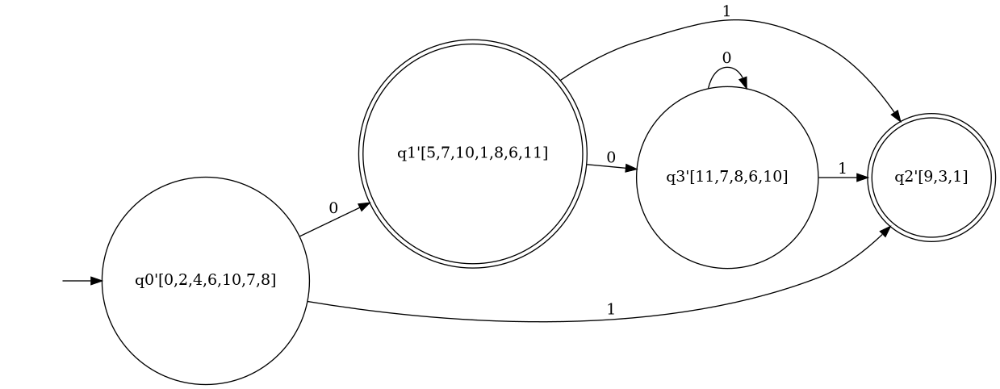
Figura 4.12: AFD equivalente ao AFN da Figura Figura fig-zeroestrelaumouzero
O resultado desse processo todo é um autômato finito determinístico correspondente a expressão regular informada.
Todo esse processo pode ser automatizado, executado através de ferramentas que representam essas estruturas (autômatos, expressões regulares) e implementam os algoritmos conforme descritos. São esses algoritmos que estão implementados em ferramentas de geração de analisadores léxicos, como Lex e Flex. A partir de um arquivo de especificação que contém as expressões regulares que pretende-se reconhecer, Lex/Flex traduzem as expressões em autômatos e desse em código em linguagem C, que implementam a programa de reconhecimento dos lexemas.
No exemplo ilustrativo em sequência estão implementados esses algoritmos. Você pode entrar com a expressão regular para converter para o autômato finito não determinístico, usando as construções sugeridas por Sipser (2012). Pode-se ainda calcular o autômato finito determinístico e o caso mínimo deste AFD. A busca de padrões num texto está disponível na última aba desta simulação.
4.4 Análise Léxica
A análise léxica constitui a primeira etapa do processo de compilação e tem como principal responsabilidade transformar o programa-fonte, originalmente representado como uma sequência de caracteres, em uma sequência de unidades léxicas denominadas tokens. Para realizar essa tarefa, o analisador léxico percorre o texto do programa, normalmente da esquerda para a direita, identificando os diferentes elementos que possuem significado para as etapas posteriores da compilação. Dessa forma, a análise léxica estabelece a primeira forma de interpretação estruturada do programa-fonte.
Os elementos reconhecidos pelo analisador léxico são denominados símbolos léxicos ou lexemas. Entre eles encontram-se palavras reservadas, operadores, identificadores, constantes literais, constantes numéricas e delimitadores, entre outros elementos definidos pela linguagem de programação. Também fazem parte do texto de entrada elementos que, embora possam ser importantes para a organização e documentação do programa, não necessariamente participam das demais fases da compilação, como comentários, espaços em branco, tabulações e, em determinadas linguagens, caracteres utilizados para formatação e indentação.
Durante o processo de reconhecimento, o analisador léxico identifica cada lexema e associa a ele um token, que representa sua categoria léxica. Por exemplo, ao encontrar a sequência de caracteres while, o analisador pode reconhecê-la como uma palavra reservada e produzir um token T_WHILE. Da mesma forma, uma sequência de caracteres que corresponda a um identificador pode produzir um token T_IDENTIF, enquanto uma sequência numérica pode ser classificada como um token correspondente a um número inteiro ou real. O token funciona, portanto, como uma representação abstrata do elemento encontrado no programa-fonte, permitindo que as etapas seguintes trabalhem com categorias léxicas em vez de manipular diretamente cada caractere do texto.
É importante distinguir o token do lexema que lhe deu origem. O lexema corresponde à sequência concreta de caracteres encontrada no programa-fonte, enquanto o token representa a categoria a que essa sequência pertence. Assim, em uma instrução como
soma := a + 10;as sequências soma, a e 10 são lexemas encontrados no texto, enquanto seus respectivos tokens podem ser classificados como identificadores e constante numérica. O operador :=, o operador + e o delimitador ; também são reconhecidos e representados por seus respectivos tokens. Essa separação entre a representação concreta e sua categoria léxica simplifica o trabalho das fases posteriores do compilador.
Nem todos os elementos encontrados durante a leitura do programa precisam ser transformados em tokens. Comentários, espaços em branco e tabulações, por exemplo, normalmente são utilizados para facilitar a leitura, a organização e a documentação do código-fonte, mas são descartados pelo analisador léxico quando não possuem significado para a sintaxe da linguagem. Essa regra, entretanto, depende das características da linguagem de programação. Em algumas linguagens, por exemplo, a indentação possui significado sintático e, nesse caso, o analisador léxico deve produzir informações que permitam às etapas posteriores considerar as mudanças de nível de indentação.
Outro aspecto importante da análise léxica é sua interação com a tabela de símbolos. Os identificadores reconhecidos pelo analisador léxico podem estar associados a informações que serão utilizadas durante as demais fases da compilação. Quando um identificador é encontrado, o compilador pode verificar sua existência na tabela de símbolos e, quando necessário, cadastrá-lo. A tabela de símbolos mantém informações sobre entidades presentes no programa, como identificadores de variáveis, procedimentos, funções e outros elementos definidos pela linguagem. Embora a construção e o gerenciamento completo dessa tabela envolvam outras fases do compilador, o reconhecimento dos identificadores durante a análise léxica constitui uma das primeiras oportunidades de interação com essa estrutura.
Como resultado de seu processamento, o analisador léxico produz uma sequência de tokens que constitui a entrada para o analisador sintático. Enquanto a análise léxica procura identificar e classificar os elementos individuais que compõem o programa, a análise sintática utiliza a sequência de tokens para verificar se esses elementos estão organizados de acordo com as regras gramaticais da linguagem. Os tokens são, portanto, a interface entre essas duas fases do compilador.
Considere, por exemplo, uma instrução simplificada como:
a := b + 10;O analisador léxico pode produzir uma sequência semelhante a:
T_IDENTIF T_ATRIB T_IDENTIF T_SOMA T_INTEIRO T_PONTO_VIRGULAA análise sintática não precisa mais trabalhar diretamente com os caracteres a, :, =, b, +, 1, 0 e ;. Ela recebe a sequência de tokens e verifica se essa sequência pode ser derivada de acordo com as produções da gramática da linguagem. Essa divisão de responsabilidades torna o processo de compilação mais organizado e permite que cada fase utilize mecanismos formais apropriados ao problema que deve resolver.
Para especificar os elementos que devem ser reconhecidos na análise léxica, utilizam-se linguagens regulares. Palavras reservadas, identificadores, números, operadores e diversos outros elementos léxicos podem ser descritos por meio de padrões regulares. As expressões regulares fornecem uma notação conveniente para representar esses padrões e constituem uma das principais formas de especificação utilizadas na construção de analisadores léxicos.
A relação entre expressões regulares e autômatos finitos é particularmente importante para a implementação do analisador léxico. Uma expressão regular pode ser utilizada para especificar uma linguagem regular e, a partir dela, pode-se construir um autômato finito capaz de reconhecer as sequências de caracteres pertencentes a essa linguagem. Assim, existe uma relação direta entre a especificação declarativa dos elementos léxicos e o mecanismo computacional responsável por reconhecê-los.
Essa relação é explorada por ferramentas de geração automática de analisadores léxicos, como o Flex. Nessa abordagem, o programador especifica os padrões correspondentes aos diferentes tokens, normalmente utilizando expressões regulares, e associa a cada padrão uma ação a ser executada quando ele for reconhecido. A ferramenta utiliza essas especificações para gerar um programa capaz de realizar o reconhecimento dos elementos léxicos do programa-fonte. Dessa forma, o desenvolvedor não precisa implementar manualmente todas as estruturas necessárias para percorrer o texto e reconhecer cada padrão.
De maneira semelhante, a construção do analisador sintático pode ser automatizada a partir de uma especificação formal da sintaxe da linguagem. Nesse caso, em vez de linguagens regulares e expressões regulares, são utilizadas gramáticas livres de contexto (GLC) para descrever as estruturas sintáticas que podem ser formadas a partir dos tokens. Ferramentas como o Bison recebem uma especificação gramatical e geram um analisador sintático capaz de reconhecer as estruturas válidas da linguagem e identificar construções que não estejam de acordo com sua gramática.
A diferença entre essas duas etapas está, portanto, relacionada ao tipo de estrutura que cada uma procura reconhecer. A análise léxica identifica unidades elementares do programa, como identificadores, números, palavras reservadas e operadores, utilizando principalmente mecanismos associados às linguagens regulares e aos autômatos finitos. A análise sintática, por sua vez, trabalha sobre a sequência de tokens produzida pelo analisador léxico e procura reconhecer estruturas mais complexas, descritas por uma gramática livre de contexto.
Essa divisão pode ser representada de forma simplificada pelo seguinte fluxo:
Programa-fonte
│
▼
Analisador léxico
│
│ reconhecimento de lexemas
│ por padrões regulares
▼
Sequência de tokens
│
▼
Analisador sintático
│
│ reconhecimento segundo
│ uma gramática livre de contexto
▼
Estrutura sintáticaNa próxima seção será apresentada a ferramenta Flex, amplamente utilizada na construção de analisadores léxicos. A partir das expressões regulares utilizadas para especificar os padrões léxicos da linguagem, o Flex implementa os mecanismos necessários para realizar sua conversão em autômatos finitos determinísticos, responsáveis pelo reconhecimento eficiente dos tokens no programa-fonte. Essa ferramenta será utilizada no desenvolvimento da primeira etapa do compilador apresentado neste livro, permitindo implementar de forma sistemática o analisador léxico e estabelecer a interface entre o programa-fonte e as etapas posteriores do processo de compilação.
4.5 Lex/Flex - Geradores de Analisadores Léxicos
A primeira fase do compilador deve ler o arquivo fonte e converter sequência de caracteres em tokens. A construção dessa rotina não é tão complicada de se implementar, no entanto, existem ferramentas que podem ser utilizadas para automatizar essa fase da tradução. Lex é uma ferramenta usada para geração de analisadores léxicos. Especifica-se padrões léxicos para lex usando expressões regulares. E para cada símbolo encontrado associa-se uma ação que pode ser, por exemplo, retornar a codificação numérica (token) do símbolo encontrado.
A ferramenta lex funciona basicamente implementando os algoritmos de Conversão de Expressões Regulares em Automatos Finitos Não-Determisticos e esses para Autômatos Finitos Determinístico, conforme apresentado anteriormente. Essa tradução transforma as expressões regulares num código em linguagem C que implementa um autômato de estados finitos para reconhecimento dos símbolos léxicos. O próximo estado é determinado pela indexação numa tabela de estados gerada pelo computador usando o próximo caracter de entrada e o estado corrente.
Metacaracteres Lex
Alguns carateres tem um significado especial nas expressões regulares escritas para Lex. Os principais são apresentados na Tabela 1.2.
| Metacaracter | Correspondência |
|---|---|
| x | caracter ‘x’, exceto nova linha |
| . | Qualquer caracter exceto nova linha |
| \(\ n\) Nova linh | a |
| * | Zero ou mais cópias da expressão precedente |
| + | Uma ou mais cópias da expressão precedente |
| ? | Zero ou uma cópia da expressão precedente |
| ^ | Início da linha |
| $ | Fim da linha |
| a b | Alternativa “a ou b” |
| (ab)+ | Uma ou mais cópias de ab (agrupamento) |
| “a+b” | Literal “a+b” |
| Classe de caracteres. Nesse caso, a, b ou c. |
Alguns exemplos de correspondências entre expressões regulares para Lex e os símbolos que são reconhecidos estão representados na Tabela 1.3.
| Expressão Regular | Símbolos Reconhecidos |
|---|---|
| abc | abc |
| abc* | ab, abc, abcc, abccc, … |
| abc+ | abc, abcc, abccc, … |
| a(bc)+ | abc, abcbc, abcbcbc, … |
| a(bc)? | a, abc |
| a ou b ou c | |
| qualquer letra no intervalo a até z. | |
| a ou - ou z | |
| qualquer símbolo exceto a ou b. | |
| a ou ^ou b | |
| a ou ou b | |
| ab | a ou b |
As expressões regulares em lex são compostas de metacaracteres (Tabela 1.2). Os exemplos de casamento de padrões são mostrados na Tabela 1.3. Com uma classe de caracteres, os caracteres normais perdem seu significado. Os dois caracteres usados em classes de caracteres (entre colchetes) são o hífen (“-”) e o circunflexo (“^”). Quando usado entre dois caracteres o hífen significa o intervalo de caracteres. O circunflexo, quando usado como o primeiro caracter, nega a expressão. Se dois padrões reconhecem o mesmo string, o casamento mais longo é utilizado. No caso de dois casamentos de padrões com o mesmo comprimento, então o primeiro padrão listado é usado.
O arquivo de entrada para Lex tem o seguinte formato:
... definicoes ...
%%
... regras ...
%%
... subrotinas ... O arquivo de entrada Lex é dividido em três seções, com %% dividindo as seções. Vamos ilustrar isto com um exemplo. O primeiro exemplo é o menor arquivo de entrada Lex possível:
%%A entrada é copiada para a saída, um caracter por vez. O primeiro %% é obrigatório, iniciando a seção de regras. Se nenhuma regra é especificada então a ação padrão é reconhecer tudo e copiar para a saída. Os arquivos de entrada e saída padrão são stdin e stdout, respectivamente. Aqui o mesmo exemplo, com os valores default explicitamente codificados:
%%
/* match everything except newline */
. ECHO;
/* match newline */
\n ECHO;
%%
int yywrap(void) {
return 1;
}
int main(void) {
yylex();
return 0;
}Dois padrões foram especificados na seção de regras. Cada padrão tem que começar na primeira coluna do arquivo texto. Estes são seguidos por caracter em branco (espaço, tabulação ou nova linha) e uma ação opcional associada com o padrão. A ação pode ser um único comando C ou múltiplos comandos delimitados por chaves. Qualquer comando que não começa na primeira coluna é copiado como está para o arquivo C gerado. Podemos usar comentários no arquivo lex. Neste exemplo há dois padrões “.” e “$$n”, com a ação ECHO associada com cada padrão. Várias macros e variáveis são pré-definidas por lex. ECHO é uma macro que escreve o código reconhecido pelo padrão léxico. Esta é a ação default para qualquer string não reconhecido. Normalmente, ECHO é definido como:
#define ECHO fwrite(yytext, yyleng, 1, yyout)A variável yytext é um ponteiro para o string reconhecido (terminado por NULL), e yyleng é o tamanho do string reconhecido. A variável yyout é o arquivo de saída, e o default é stdout. A função yywrap é chamada por lex quando a entrada é esgotada. Retorna um se terminou, ou 0 se mais processamento é necessário. Todo programa C completo precisa de uma função main. Neste exemplos, nós simplesmente chamamos yylex, o ponto de entrada principal para lex. Algumas implementações de lex incluem cópias de main e yywrap na biblioteca, eliminando a necessidade de codificá-las explicitamente.
Algumas das funções, macros e variáveis pré-definidas no arquivo gerado por Lex estão listados na Tabela 1.4.
| Nome | Função |
|---|---|
| int yylex(void) | Função principal do analisador que retorna o próximo token. |
| char *yytext | Ponteiro para o padrão léxico (string) reconhecido. |
| yyleng | Tamanho do string reconhecido. |
| yylval | Valor associado com o token. |
| int yywrap(void) | wrapup, retorna 1 se acabou, 0 se não acabou. |
| FILE *yyout | Arquivo de saída. |
| FILE *yyin | Arquivo de entrada. |
| INITIAL | Condição inicial. |
| BEGIN condition | Troca a condição inicial. |
| ECHO | Escreve o string reconhecido. |
Alguns Exemplos de Lex
O primeiro exemplo apresenta um arquivo de especificação lex que gera um programa que não faz nada. Todas as entradas são reconhecidas mas não existe nenhuma ação associada com qualquer padrão, tal que nada será apresentado na saída.
%%
.
\nO seguinte exemplo numera cada linha do arquivo. Algumas implementações de lex predefinem e calculam a variável yylineno. O arquivo de entrada para lex é yyin, e o arquivo de entrada default é stdin.
%{
int yylineno;
%}
%%
^(.*)\n printf("%4d\t%s", ++yylineno, yytext);
%%
int main(int argc, char *argv[]) {
yyin = fopen(argv[1], "r");
yylex();
fclose(yyin);
}A seção de definições é composta de substituições, códigos e estados iniciais. O código na seção de definições é copiado como está para o topo do arquivo C gerado e precisa ser delimitado com os marcadores “%{” and “%}”. As substituições simplificam as regras para casamento de padrões. Por exemplo, podemos definir dígitos e letras como segue:
digit [0-9]
letter [A-Za-z]
%{
int count;
%}
%%
/* match identifier */
{letter}({letter}|{digit})* count++;
%%
int main(void) {
yylex();
printf("number of identifiers = %d\n", count);
return 0;
}Espaços em branco precisam separar o termo definido e a expressão associada. As referências para as substituições nas regras devem estar delimitadas por chaves ({letter}) para diferenciá-las de literais. Quando o padrão léxico é reconhecido nas regras, o código C associado é executado. Aqui um exemplo de analisador que conta o número de caracteres, palavras e linhas no arquivo (similar ao comando Unix wc):
%{
int nchar, nword, nline;
%}
%%
\n { nline++; nchar++; }
[^ \t\n]+ { nword++, nchar += yyleng; }
. { nchar++; }
%%
int main(void) {
yylex();
printf("%d\t%d\t%d\n", nchar, nword, nline);
return 0;
}4.6 Analisador Léxico para Linguagem Simples
A linguagem Simples\(^\circledR\), na sua versão inicial, é composta dos seguintes símbolos léxicos:
Palavras Reservadas: programa, inicio, fimprograma, leia, escreva, se, entao, senao, fimse, enquanto, faca, fimenquanto.
Operadores: +, -, *, div, \(>\), \(<\), +, e, ou, nao, \(<\)\(-\), (, )
tipos: inteiro, logico
constantes: V, F
identificadores: (letra)(letradigito)*
números: (digito)+
Utilizando a ferramenta flex pode-se construir um classificador do código da linguagem Simples. Esse classificador é uma versão básica do analisador léxico que recebe como entrada um código de Simples e apresenta na saída uma tabela onde todos os símbolos léxicos encontrados no código são classificados. Dado o seguinte código Simples:
morekeywords=programa, inicio, fimprograma, leia, escreva, se, entao, senao, fimse, enquanto, faca, fimenquanto, inteiro, logico, V, F, e, ou, nao, div, sensitive=false, morecomment=[l]//, morecomment=[s]/**/, morestring=[b]“,
programa teste
inteiro A B
inicio
A <- 5
leia B
B <- A * B
escreva B
fimprogramaObtem-se como saída a seguinte tabela:
programa: palavra reservada
teste: identificador
inteiro: palavra reservada
A: identificador
B: identificador
inicio: palavra reservada
A: identificador
<-: operador de atribuicao
5: numero
leia: palavra reservada
B: identificador
B: identificador
<-: operador de atribuicao
A: identificador
*: operador aritmetico multiplicacao
B: identificador
escreva: palavra reservada
B: identificador
fimprograma: palavra reservadaO arquivo de especificação Lex que implementa esse classificador de símbolos da linguagem Simples é:
identificador [a-zA-Z]([a-zA-Z0-9])*
numero [0-9]+
espaco [ \t]+
novalinha [\n]
%%
programa printf("%11s: palavra reservada\n", yytext);
inicio printf("%11s: palavra reservada\n", yytext);
fimprograma printf("%11s: palavra reservada\n", yytext);
leia printf("%11s: palavra reservada\n", yytext);
escreva printf("%11s: palavra reservada\n", yytext);
se printf("%11s: palavra reservada\n", yytext);
entao printf("%11s: palavra reservada\n", yytext);
senao printf("%11s: palavra reservada\n", yytext);
fimse printf("%11s: palavra reservada\n", yytext);
enquanto printf("%11s: palavra reservada\n", yytext);
faca printf("%11s: palavra reservada\n", yytext);
fimenquanto printf("%11s: palavra reservada\n", yytext);
"+" printf("%11s: operador aritmetico soma\n", yytext);
"-" printf("%11s: operador aritmetico subtracao\n", yytext);
"*" printf("%11s: operador aritmetico multiplicacao\n", yytext);
div printf("%11s: operador aritmetico divisao\n", yytext);
">" printf("%11s: operador relacional maior\n", yytext);
"<" printf("%11s: operador relacional menor\n", yytext);
"=" printf("%11s: operador relacional igual\n", yytext);
e printf("%11s: operador logico conjuncao\n", yytext);
ou printf("%11s: operador logico disjuncao\n", yytext);
nao printf("%11s: operador logico negacao\n", yytext);
"<-" printf("%11s: operador de atribuicao\n", yytext);
"(" printf("%11s: simbolo abre parenteses\n", yytext);
")" printf("%11s: simbolo fecha parenteses\n", yytext);
inteiro printf("%11s: palavra reservada\n", yytext);
logico printf("%11s: palavra reservada\n", yytext);
V printf("%11s: constante logica de verdade\n", yytext);
F printf("%11s: constante logica de falsidade\n", yytext);
{identificador} printf("%11s: identificador\n", yytext);
{numero} printf("%11s: numero\n", yytext);
{espaco} /* nao faz nada */
{novalinha} /* nao faz nada */
. printf("%11s: ERRO - SIMBOLO NAO RECONHECIDO!\n", yytext);
%%
int yywrap(void) { return 1; }
int main (void) {
yylex();
return 0;
}A exclusão dos comentários tem um tratamento especial na sintaxe Lex/Flex. A marca de início de comentário, normalmente representada por uma sequência de símbolos como /* e (*, determina uma configuração especial para o autômato. A partir dessa sequência, o analisador léxico deve descartar todos os símbolos, exceto a marca de fim de linha que é utilizada na contagem de linhas do arquivo fonte. Essa contagem é necessária para que as rotinas de tratamento de erro possam indicar a linha correta do erro. E quando o autômato identifica a sequência que fecha o comentário (/* ou *)), o autômato deve retornar ao seu estado normal. A Figura fig-af-coment representa o autômato para o tratamento de comentário de linhas. O autômato vai para o estado X quando encontra a marca de início de comentário. Nesse estado, o autômato consome os símbolos da entrada, quando encontra a sequência que marca o fim do comentário, o autômato volta ao estado inicial de aceitação.
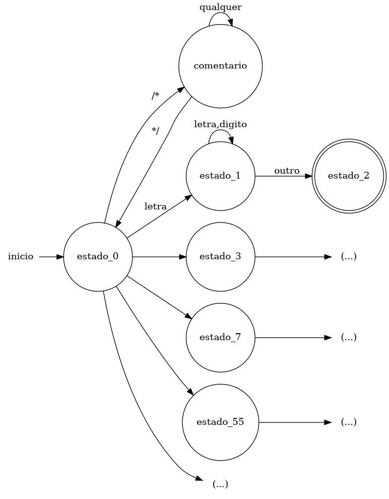
O novo arquivo de especificação Flex que inclui o tratamento para comentário de linha (//), comentário de múltiplas linhas (/* … */) e a contagem do número das linhas no arquivo fonte é:
identificador [a-zA-Z]([a-zA-Z0-9])*
numero [0-9]+
espaco [ \t]+
novalinha [\n]
%x coment
%{
int nlin = 1;
%}
%%
programa printf("%3d|%11s: reservada\n", nlin, yytext);
inicio printf("%3d|%11s: reservada\n", nlin, yytext);
fimprograma printf("%3d|%11s: reservada\n", nlin, yytext);
leia printf("%3d|%11s: reservada\n", nlin, yytext);
escreva printf("%3d|%11s: reservada\n", nlin, yytext);
se printf("%3d|%11s: reservada\n", nlin, yytext);
entao printf("%3d|%11s: reservada\n", nlin, yytext);
senao printf("%3d|%11s: reservada\n", nlin, yytext);
fimse printf("%3d|%11s: reservada\n", nlin, yytext);
enquanto printf("%3d|%11s: reservada\n", nlin, yytext);
fimenquanto printf("%3d|%11s: reservada\n", nlin, yytext);
inteiro printf("%3d|%11s: reservada (tipo)\n", nlin, yytext);
logico printf("%3d|%11s: reservada (tipo)\n", nlin, yytext);
"+" printf("%3d|%11s: soma\n", nlin, yytext);
"-" printf("%3d|%11s: subtracao\n", nlin, yytext);
"*" printf("%3d|%11s: multiplicacao\n", nlin, yytext);
"<-" printf("%3d|%11s: atribuicao\n", nlin, yytext);
div printf("%3d|%11s: divisao\n", nlin, yytext);
">" printf("%3d|%11s: maior\n", nlin, yytext);
"<" printf("%3d|%11s: menor\n", nlin, yytext);
"=" printf("%3d|%11s: igual\n", nlin, yytext);
e printf("%3d|%11s: e logico\n", nlin, yytext);
ou printf("%3d|%11s: ou logico\n", nlin, yytext);
nao printf("%3d|%11s: negacao\n", nlin, yytext);
"(" printf("%3d|%11s: abre\n", nlin, yytext);
")" printf("%3d|%11s: fecha\n", nlin, yytext);
"V" printf("%3d|%11s: constante\n", nlin, yytext);
"F" printf("%3d|%11s: constante\n", nlin, yytext);
"//".* ;
"/*" BEGIN(coment);
<coment>"*/" BEGIN(INITIAL);
<coment>. ;
<coment>\n nlin++;
{identificador} printf("%3d|%11s: identificador\n", nlin, yytext);
{numero} printf("%3d|%11s: numero\n", nlin, yytext);
{espaco} ;
{novalinha} nlin++;
%%
int yywrap() { return 1; }
int main () {
yylex();
return 0;
}Para o arquivo Simples de entrada:
/*----------------------
Programa exemplo em linguagem simples
--------------------*/
programa um
inteiro a b // declaracao das variaveis
inicio
leia a // leitura de a
leia b // leitura de b
enquanto a < b faca
escreva a
a <- a + 1
fimenquanto
fimprogramaA saída produzida como resultado do classificador de símbolos (analisador léxico simplificado) é:
4| programa: reservada
4| um: identificador
5| inteiro: reservada (tipo)
5| a: identificador
5| b: identificador
6| inicio: reservada
7| leia: reservada
7| a: identificador
8| leia: reservada
8| b: identificador
9| enquanto: reservada
9| a: identificador
9| <: menor
9| b: identificador
9| faca: identificador
10| escreva: reservada
10| a: identificador
11| a: identificador
11| <-: atribuicao
11| a: identificador
11| +: soma
11| 1: numero
12|fimenquanto: reservada
13|fimprograma: reservada